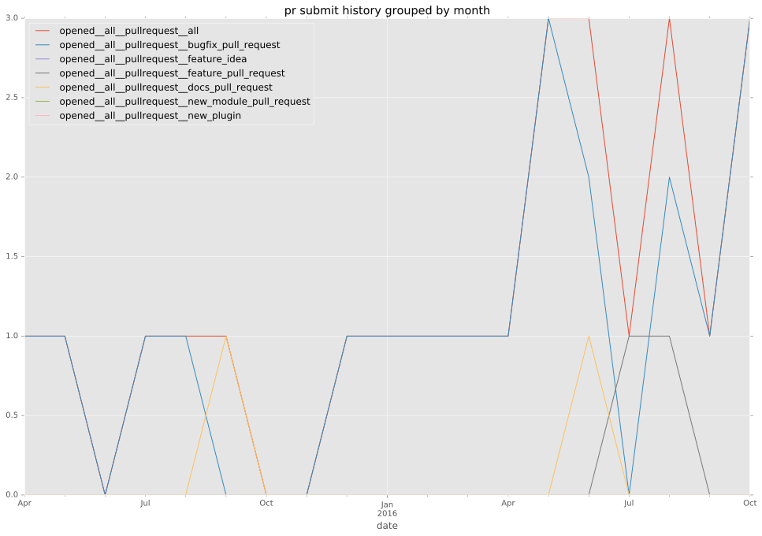
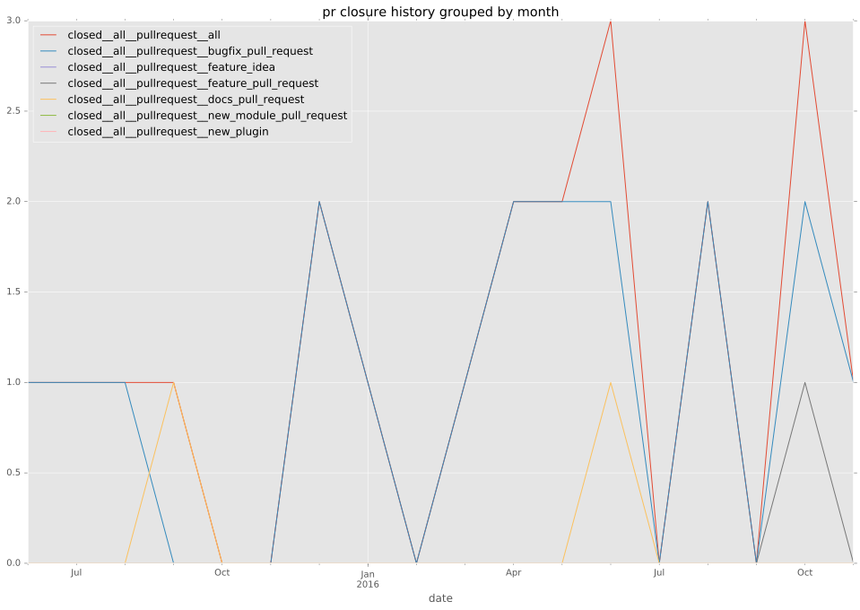
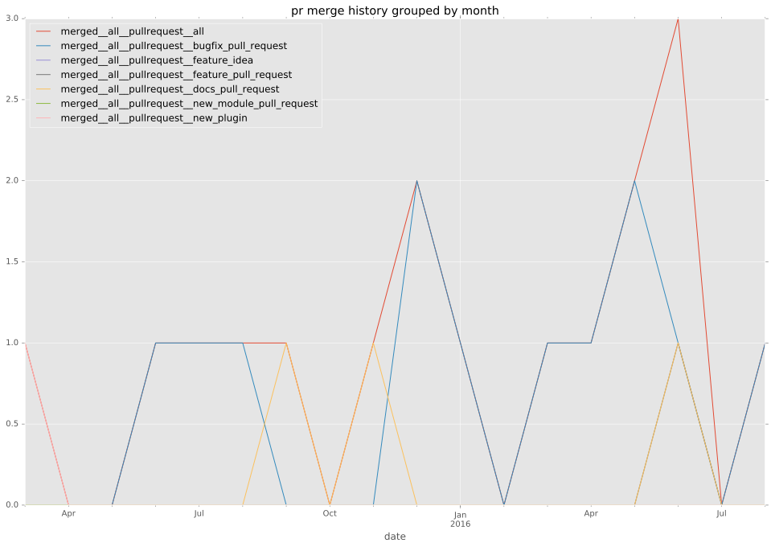

authors
- chrisisbeef
maintainers
- chrisisbeef
contributors
- chrisisbeef : 63 commits
- gedl : 16 commits
- halberom : 10 commits
- dagwieers : 8 commits
- abadger : 8 commits
- ebostijancic : 6 commits
- raben2 : 4 commits
- chris-l-weber : 4 commits
- yuppie-flu : 3 commits
- jhiggins : 2 commits
- bcoca : 2 commits
- sirkubax : 1 commits
- resmo : 1 commits
- chrrrles : 1 commits
total issue counts
feature pull request: 5
docs report: 1
pullrequest: 29
docs pull request: 3
bugfix pull request: 19
feature idea: 1
issue: 12
new plugin: 2
bug report: 10
issue history
pullrequest history



days open by issue type
bugfix pull request
count: 28
std: 53.3738313504
min: 0
max: 206
median: 6.0
mean: 27.3928571429
all
count: 49
std: 56.2865678567
min: 0
max: 206
median: 5.0
mean: 30.2244897959
pullrequest
count: 0
std: nan
min: nan
max: nan
median: nan
mean: nan
docs pull request
count: 6
std: 1.54919333848
min: 0
max: 3
median: 0.0
mean: 1.0
docs report
count: 1
std: nan
min: 5
max: 5
median: 5.0
mean: 5.0
feature pull request
count: 4
std: 5.97215762239
min: 7
max: 21
median: 17.0
mean: 15.5
feature idea
count: 1
std: nan
min: 181
max: 181
median: 181.0
mean: 181.0
issue
count: 0
std: nan
min: nan
max: nan
median: nan
mean: nan
new plugin
count: 3
std: 88.334591186
min: 0
max: 153
median: 153.0
mean: 102.0
bug report
count: 6
std: 53.4141055028
min: 0
max: 134
median: 1.5
mean: 25.6666666667
closures grouped by total days open